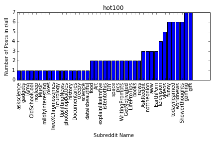
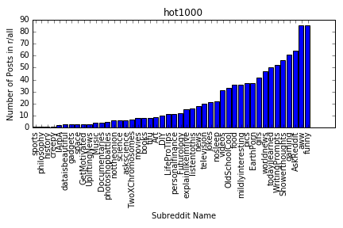
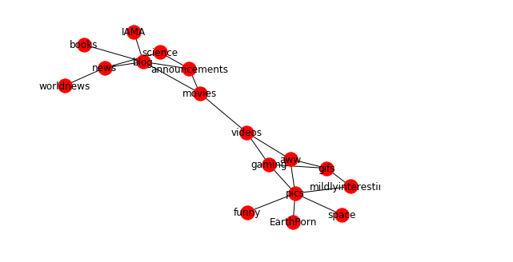
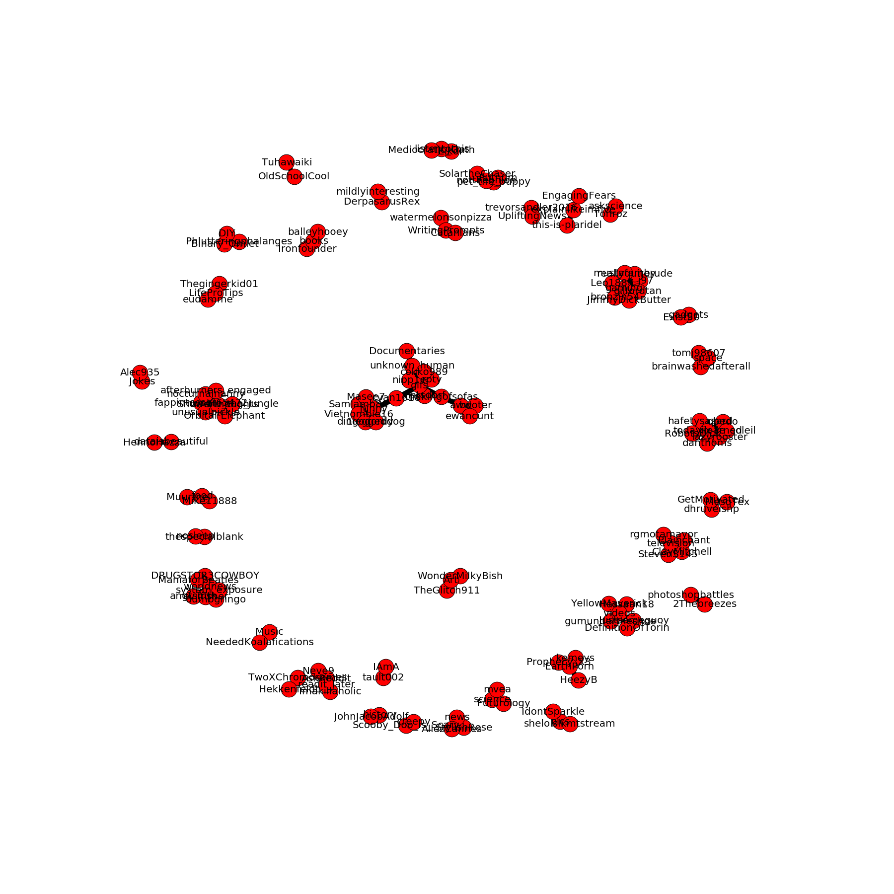
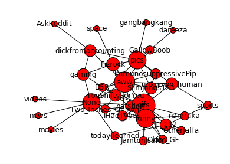

Project Information
Technical Description:
Reddit is a website where people can essentially post anything they want. This can range from pictures, gifs, and even news articles. Since there is such a wide variety of posts on Reddit , people obviously come to the site for different things. Reddit is separated into different communities that all follow a specific theme of posts. For our project, we want to create a network that represents Reddit’s front page. Reddit’s front page is always changing, so we plan to get data from the top posts in one day for one graph and at the same time we will gather data from the top posts of all time. This will provide two different perspectives that we can use to see how connected Reddit’s communities actually are.
Methodology:
Network Model:
We plan to have a bit of a clustered model to visualize the different subreddits present in our data set. This should show which subreddits are closely related and which are not.
Data:
We are using post titles, authors, karma, date, and what subreddit a post was posted in. We retrieved this data using the Python Reddit API Wrapper (PRAW). We will connect the posts with each other and hopefully get a graph that shows the interconnectedness of Reddit’s communities.
Network Metrics:
We are interested in the overall connectedness of our graph since we want to visualize how connected the different
communities of Reddit really are. So we will look for local bridges, local clusters, nodes with
high degrees. These connections will show how similar some subreddits are to others.
For example, if one subreddit is essentially separated from the rest of the graph, then that
suggests that subreddit has niche or very specific content. But if a subreddit doesn’t have
many local bridges to others, then it would suggest that is a very popular subreddit with a
wide range of content. We are also interested in looking at the number of posts from each subreddit that make it to the front page
Analysis Results:
From our data, a large proportion of front page posts come from only a few different subreddits. For example, although we used data from 1000 different top submissions, less than 50 subreddits actually are relevant. This is evident as hundreds of front page posts are attributed to the subreddits of r/pics, r/funny, r/gifs and r/aww, subreddits that are related to more general topics that allow for a wider range of content to be submitted. We have found that the front page of Reddit usually only features a select number of subreddits. This could be due to the fact that usually every users front page is different depending on what subreddits they are subscribed to. For the purpose of this experiment we had used a fresh account to do the analysis so its front page has the same content as every other basic user. We got six different data sets for our analysis and they are divided into two categories top posts of all time and the current hot posts as of April, 14, 2018. The six data sets are displayed below as bar graphs based on number of posts from each subreddit.
Top10 r/all Subreddits Bar Graph:
Top100 r/all Subreddits Bar Graph:
Top1000 r/all Subreddits Bar Graph:
Hot10 r/all Subreddits Bar Graph:

Hot100 r/all Subreddits Bar Graph:
Hot1000 r/all Subreddits Bar Graph:
Visualization:
Here we took the subreddits present in the "Top 100" data set and created a network graph based on the similarities in post content. Nodes are connected if the content between them is very similar in format or in types of posts. We characterize similarities between posts by looking at whether the content of it was an image, a text post, or a hyperlink to an external location. We can see a clear distinction between news and blog subreddits compared to picture and video subreddits. We can also see that r/pics is at the center of all of the picture subreddits. It appears too that r/movies is the real link between the picture subreddits and the more text-based and article-based subreddits.
In the below graph nodes are posts that are connected by edges between authors and subreddits of the posts.
The graph below displays some of the top post authors (nodes) connected with specific subreddits(nodes). This relation between the different subreddits that appear on the front page and their authors help to see if specific authors reached the front page more than others. It seems that they do.
Workspace Setup:
If you are interested in reproducing our analysis, our Jupyter IPython Notebooks can be found on our Github here:
There are sevaral steps and procedures in order to setup our workspace which are detailed on our GitHub above.
Accessing Our Data Sets:
If you are interested in looking at our data sets that we used they can be found on our Github here:
All of this data was collected using PRAW a python wrapper for the Reddit API.
Each data set we use is a JSON file, more information on the data can be found on our Github above.